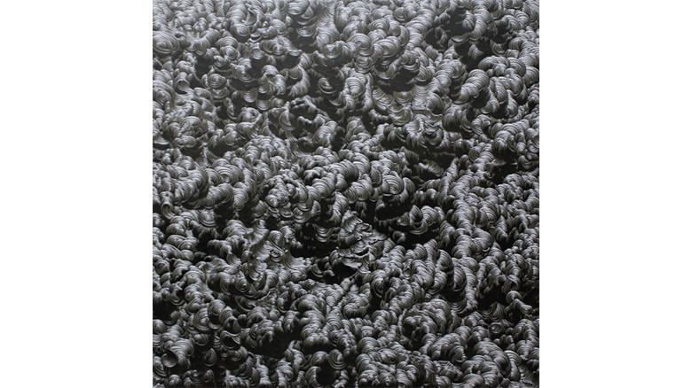

minimal

畠山瑞規
-どんな人
名古屋芸大卒の若いアーティストです。いった展覧会「片山正通的百科全書」で見て、いいなと思ったので紹介します。
-解説
キャンバスにひたすらうねりを表現した作品です。うねりのテカリは白い絵の具をつけて筆で一発でつけているみたいです。光の当たり具合を均等にしてうねりを作るのは手作業ではなかなか難しいと思いますが、この作品では本当にバランスよくうねりの光沢感がでています。
-好きなところ
動感と立体感があって見ごたえがありました。 うねうねした曲線を画面全体にひたすら描いたら、煩雑な印象を 与えてしまいがちですが、陰影のバランスを調整して、 統一感のある画面にまとめている感じがしました。